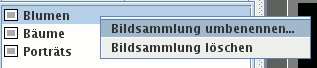

Im Kartenreiter Bildsammlungen können Sie Bildsammlungen auswählen. Eine Bildsammlung ist eine beliebige Auswahl von Bildern, beispielsweise alle Bilder Ihrer letzten Reise, Ihre besten Landschaftsfotos, Fotos, die Sie demnächst ausdrucken wollen. Sie können die Reihenfolge der Bilder in einer Bildsammlung ändern durch Ziehen und Ablegen.
Klicken Sie mit der linken Maustaste auf eine Bildsammlung, werden in der Fenstermitte Vorschaubilder dieser Sammlung angezeigt. Die rechte Maustaste zeigt ein Kontextmenü mit verschiedenen Optionen.

In die Bildsammlung Zuletzt importiert werden automatisch die Bilder eingefügt, die Sie von einer Kameraspeicherkarte kopierten.
Wählen Sie Bilder aus und drücken anschließend die Taste P (englisch: "Pick"), werden die Bilder in die Bildsammlung Ausgewählt eingefügt. Sie können auch das Kontextmenü des Vorschaubildfensters benutzen: Hinzufügen zu Ausgewählt.
Hier können Sie Bilder sammeln, die Sie in Erwägung ziehen für einen bestimmten Zweck, z.B. zum Behalten nach einem Import von der Kameraspeicherkarte, für ein Fotobuch, zur Veröffentlichung im Web etc. Nach und nach füllen Sie die Sammlung und entfernen wieder ungeeignete Bilder mit der Taste Entf.
Benötigen Sie den Inhalt nicht mehr oder wollen die Bildsammlung erneut befüllen, können Sie die Bilder auswählen und entfernen mit der Taste Entf; von der Festplatte werden diese so nicht gelöscht.
Wählen Sie Bilder aus und drücken anschließend die Taste R (englisch: "Reject"), werden die Bilder in die Bildsammlung Verworfen eingefügt. Sie können auch das Kontextmenü des Vorschaubildfensters benutzen: Hinzufügen zu Verworfen.
Hier können Sie Bilder sammeln, die Sie nicht mehr wollen, aber noch einmal überprüfen möchten, bevor Sie diese von der Festplatte löschen. Nach und nach füllen Sie die Sammlung und entfernen wieder Bilder, die Sie doch behalten wollen, mit der Taste Entf.
Von der Festplatte löschen Sie die Bilder über das Kontextmenü des Vorschaubildfensters: Vom Datenträger löschen.